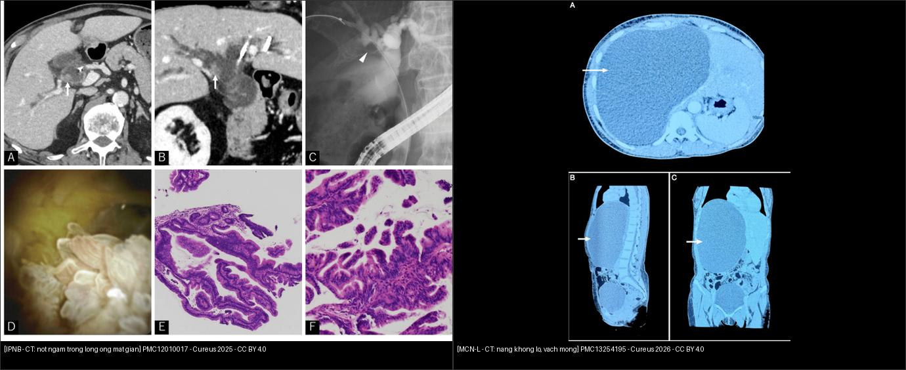
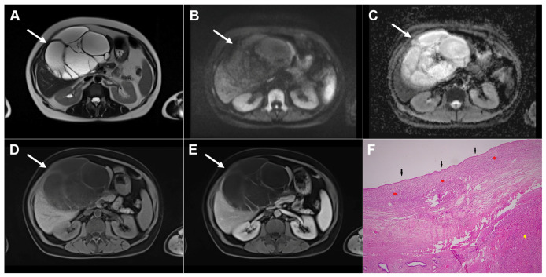
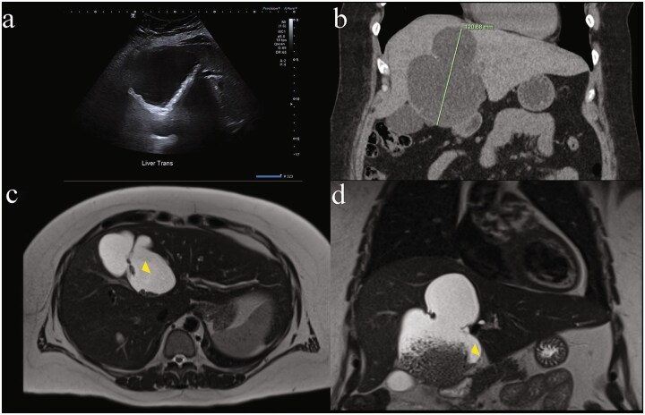
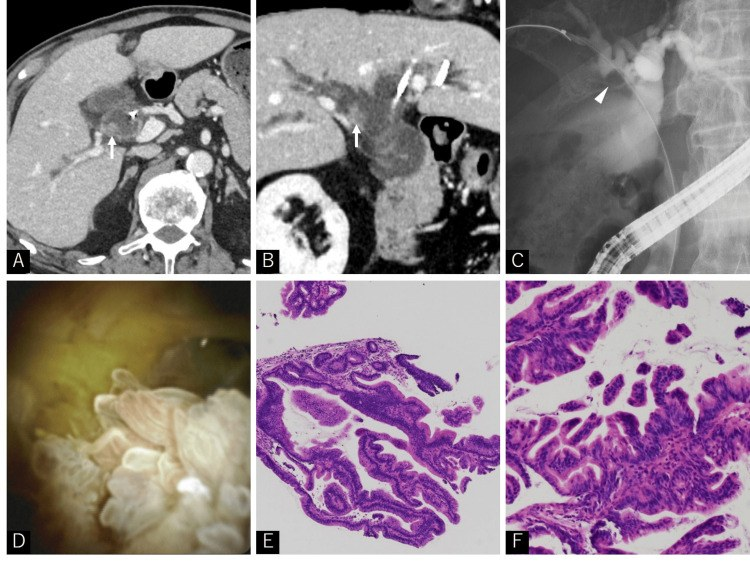
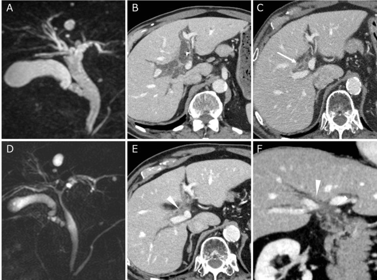
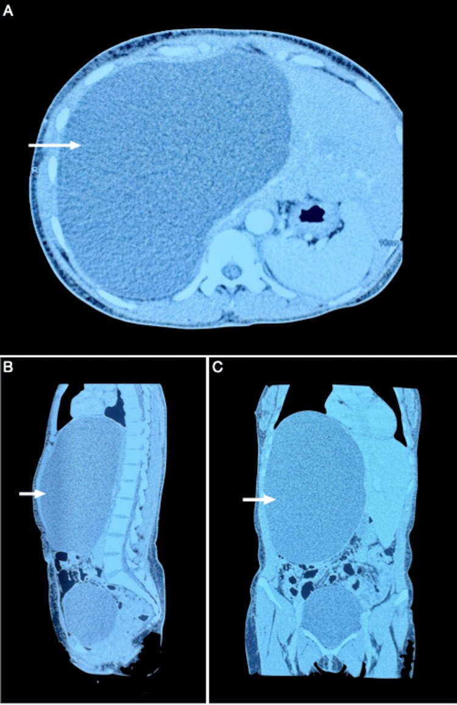
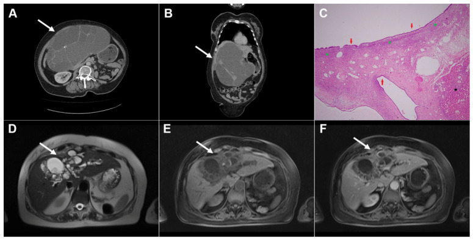
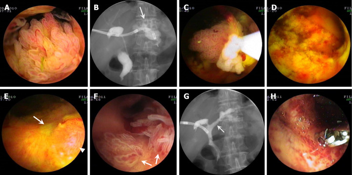
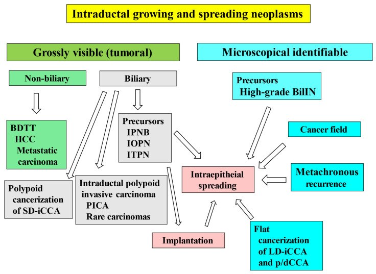

129 — U nhầy nhú nội ống mật (IPNB) & u nhầy đường mật (MCN-L): khối trong lòng ống vs nang có vách / Intraductal papillary neoplasm of the bile duct & mucinous cystic neoplasm of the liver
Tags: pattern:u-long-ong-mat vung:duong-mat protocol:MRCP protocol:cholangioscopy
Mức chắc chắn (certainty): tổng hợp y văn (literature synthesis) — nhóm tự biên từ y văn mở, có 1 ca nguyên văn IPNB (PMC12010017) và 1 ca nguyên văn MCN-L 27 cm (PMC13254195); mọi số liệu lấy nguyên từ bài gốc, ghi PMCID tại chỗ.
Câu chốt: cùng là "nang/khối đường mật", nhưng IPNB là u TIỀN ÁC MỌC TRONG LÒNG ỐNG (phải cắt đường mật), còn MCN-L là u nang TIỀN ÁC CÓ MÔ ĐỆM BUỒNG TRỨNG (phải cắt trọn u, không chọc/hút). Nhầm hướng điều trị đều dẫn tới tái phát hoặc gieo rắc.
1. Tổng quan bệnh học – cơ chế hình ảnh
1.1 Hai thực thể, hai nguồn gốc
- IPNB (intraductal papillary neoplasm of the bile duct): u tiền ác, nhìn thấy đại thể, gồm nhú/nhung mao biểu mô đường mật mọc trong lòng ống mật lớn (trong gan, rốn gan hoặc ống mật chủ) — định nghĩa WHO 2019, giữ nguyên trong phân loại 2026 (PMC12118913, PMC13162898). Đây là tiền thân của ung thư đường mật trong gan typ ống lớn và CCA rốn gan/đoạn xa.
- Tần suất: ~4–15% các u đường mật (PMC12118913).
- Type 1: cấu trúc nhú–nhung mao đều, lõi xơ mạch mảnh, loạn sản thấp–trung bình; Type 2: cấu trúc phức tạp, phân nhánh không đều và/hoặc thành phần đặc–ống, tế bào độ cao, xâm lấn nhiều hơn (PMC12118913).
- Hình thái trên hình ảnh: branched (dạng nhánh), main duct (ống chính), mixed (hỗn hợp) — sống 5 năm sau mổ 100% / 90% / 50%, tái phát 5 năm 62% ở thể mixed (PMC12118913, n = 42).
- Xâm lấn qua thành ống (SE/SI) → sống đặc hiệu bệnh 5 năm 0%; hạch di căn cũng làm tiên lượng xấu (p = 0,021) (PMC12118913). Đây là lý do phải đánh giá độ xâm lấn và hạch trước mổ, không chỉ "có khối trong ống".
- MCN-L (mucinous cystic neoplasm of the liver): u nang tiền ác với biểu mô tiết nhầy + mô đệm kiểu buồng trứng (ovarian-type stroma) — mô đệm này là tiêu chuẩn mô bệnh học bắt buộc và là thứ phân biệt MCN-L với mọi nang gan khác (PMC13194582, PMC13254195).
- < 5% các nang gan; 96–100% ở nữ khi bắt buộc có mô đệm buồng trứng; kích thước trung bình khi chẩn đoán ~11 cm (PMC13194582, PMC13254195).
- Ung thư xâm lấn đi kèm: < 5% đến ~9% (PMC13254195). Không thể loại trừ ác tính trước mổ bằng hình ảnh/sinh thiết → cắt trọn u là tiêu chuẩn, không hút/chọc/đốt.
- Đa số MCN-L KHÔNG thông với cây mật; thể có thông mật là biến thể hiếm, dễ giả IPNB (PMC12981661).
1.2 TẠI SAO hình ảnh trông như vậy (vật lý + mô bệnh)
- Khối nhú trong lòng ống: tổ chức u có mạch máu trong lõi xơ → ngấm cản quang ở thì động mạch/TM cửa, trong khi dịch mật xung quanh không ngấm → nốt sáng nằm trong ống mật tối trên CT sau tiêm. Trên MRCP (T2 nặng), dịch mật rất sáng, còn u trung bình–tối hơn → khuyết thiếu (filling defect) nổi bật trong ống sáng.
- Giãn ống mật không tương xứng: nhầy do u tiết ra làm đầy và tăng áp lực lòng ống, gây giãn lan cả trên và dưới chỗ tắc, trong khi nguyên nhân cơ học (sỏi) thường chỉ giãn phía trên. Đây là dấu hiệu "gợi ý nhầy" kinh điển; ca PMC12010017 vẫn giãn ống mật 1 tháng sau khi đã lấy sỏi, và nhầy chảy ra từ nhú Vater là lúc nghĩ tới IPNB.
- T2/ADC: tổ chức nhú đặc hạn chế khuếch tán nhẹ; nhưng nhầy rất sáng T2 có thể làm ADC không thấp giả tạo — không dùng DWI một mình để chốt lành/ác. Giá trị của DWI là phát hiện ổ đặc/xâm lấn và hạch.
- MCN-L: dịch nhầy T2 rất sáng, T1 tối, vách xơ T2 tối + ngấm thuốc, không có nốt đặc trong lòng ống mật vì u nằm trong nang, không nằm trong ống. Vôi hóa vách gặp ở một phần ca (không đặc hiệu).
- Vì sao MCN-L "giả nang đơn thuần": nếu một ngăn, vách mỏng, không có thành phần đặc, hình ảnh gần như trùng nang gan đơn thuần — ca 27 × 18 × 19 cm trong PMC13254195 là ví dụ điển hình. Kích thước lớn + giới nữ trung niên + vách mỏng nhưng có vài vách phải cảnh giác, không chọc hút.
2. Mẫu hình + chẩn đoán phân biệt theo vị trí (Gamut)
2.1 Khối/khuyết thiếu TRONG LÒNG ống mật (intraductal)
- IPNB (typ ống lớn/rốn gan): nốt nhú ngấm thuốc, giãn ống mật trên–dưới, có thể nhiều ổ do gieo cấy nội ống.
- iCCA thể mọc trong lòng ống / huyết khối u (BDTT): HCC, di căn đại tràng–thận–melanoma có thể mọc vào lòng ống mật, giả IPNB (PMC13162898).
- Sỏi trong gan / sỏi OMC: tăng đậm độ trên CT không cản quang, tín hiệu trống trên MRCP, di động khi đổi tư thế/không ngấm thuốc.
- Máu cục sau chấn thương/ERCP: không ngấm, tự tiêu theo thời gian.
- IOPN/ITPN: IOPN (u nhú tế bào ưa acid) và ITPN (u ống–nhú) — nhóm u nội ống khác, mô bệnh học mới phân biệt được; ITPN có thể giống iCCA typ ống nhỏ (PMC13162898).
- MCN-L có thông mật (hiếm): nang chứa nhầy thoát vào ống mật, tạo khuyết thiếu + giãn ống, rất dễ nhầm IPNB (PMC12981661).
2.2 Nang/khối dạng NANG trong gan
- MCN-L: nữ trung niên, nang lớn nhiều ngăn/vách, không thông mật (thường), mô đệm buồng trứng.
- Nang gan đơn thuần: thành không thấy, dịch thuần nhất 0–15 HU, không vách/nốt, không thông mật.
- Nang sán lá gan: màng tách, nang con, vôi hóa vỏ, huyết thanh dương tính (xem 139).
- Bệnh Caroli: giãn nang thông với cây mật + central dot (mạch máu trong nang) — xem 123.
- U mô đệm đường mật (von Meyenburg): nhiều nốt nhỏ < 1,5 cm, T2 "trời sao", không thông mật.
- Di căn nang / u nhầy khác: thường nhiều ổ, có thành phần đặc, bối cảnh ung thư nguyên phát.
2.3 Mnemonic "MINT" cho khối trong lòng ống
- Mucin → IPNB (giãn không tương xứng, nhầy).
- Invasion → iCCA/BDTT (khối ngấm + xâm lấn nhu mô).
- Nidus → sỏi (tăng đậm độ, tín hiệu trống).
- Thrombus → máu cục (không ngấm, có bối cảnh chấn thương/thủ thuật).
3. Bảng so sánh phân biệt (ma trận đối chiếu)
| Thực thể (entity) | Hình ảnh điển hình | Chốt vào (rule-in) | Chốt loại (rule-out) | Gợi ý xác nhận |
|---|---|---|---|---|
| IPNB | Nốt/nhú ngấm thuốc trong lòng ống mật giãn; giãn trên–dưới; có thể nhiều ổ | Nốt ngấm trong lòng ống + giãn không tương xứng + nhầy | Nang không thông mật, không có nốt trong ống → nghĩ MCN/nang | MRCP + MRI đa thì + POCS sinh thiết; cắt đường mật |
| MCN-L | Nang lớn nhiều ngăn/vách, dịch nhầy, vách ngấm; không nốt trong ống | Nữ + nang lớn + vách ngấm + không thông mật | Có nốt ngấm trong lòng ống + giãn mật → IPNB; màng tách/nang con → sán | MRI gan mật; cắt trọn u (không hút) |
| iCCA/BDTT | Khối ngấm xâm lấn nhu mô, hẹp/tắc ống, hạch; BDTT là khối trong ống | Khối ngấm + phá nhu mô + hạch + bối cảnh HCC/di căn | Chỉ có khuyết thiếu không ngấm, bờ nhẵn → sỏi/máu | CT 4 thì/MRI, sinh thiết |
| Sỏi trong gan | Tăng đậm độ trên CT không cản quang; tín hiệu trống trên MRCP; có thể di động | Tăng đậm độ + tín hiệu trống + không ngấm | Nốt ngấm thuốc → u | CT không cản quang + MRCP; ERCP/POCS |
| Nang sán (CE1–CE3a) | Nang màng tách/nang con, vỏ vôi hóa; không ngấm | Màng tách + nang con + huyết thanh dương | Vách ngấm + nốt đặc → MCN/IPNB | US + MRI + ELISA (xem bài 139) |
| Nang gan đơn thuần | 0–15 HU, thành không thấy, không vách/nốt | Thuần dịch + không ngấm + không vách | Vách dày/ngấm, nốt, vôi hóa → MCN/khác | US đủ nếu điển hình; MRI khi không chắc |

Trái: IPNB — nốt ngấm thuốc trong ống mật giãn (mũi tên), kèm ERCP/cholangioscopy/mô bệnh. Phải: MCN-L 27 cm — nang một ngăn, vách mỏng, không nốt đặc. Cả hai đều CC BY 4.0; ảnh ghép letterbox giữ nguyên tỷ lệ.3.1 Ba câu hỏi đọc hình ảnh theo thứ tự
- Tổn thương nằm TRONG lòng ống hay TRONG nang? → trong lòng ống = IPNB/BDTT/sỏi; trong nang = MCN/nang/sán.
- Có ngấm thuốc không? → ngấm = tổ chức u (IPNB, MCN vách/nốt, iCCA); không ngấm = dịch/sỏi/máu.
- Có thông với cây mật không? → có = IPNB, Caroli, MCN thể thông mật; không = MCN điển hình, nang đơn thuần, sán.

MCN-L: T2 nhiều ngăn (A), DWI/ADC không hạn chế đáng kể (B,C), vách ngấm thuốc (D,E); mô bệnh có mô đệm buồng trứng (F). Điểm chốt: u nằm trong nang, không phải trong lòng ống mật. Nguồn: Djokic Kovač J et al., Diagnostics (Basel) 2026, PMC13163135, CC BY 4.0.4. Protocol chụp + hệ phân độ/điểm chuẩn hóa
4.1 Protocol
- Siêu âm bụng: bước đầu, phát hiện giãn đường mật/nang; không đủ để chốt IPNB.
- CT bụng–chậu đa thì (không cản quang + động mạch + TM cửa + muộn): đánh giá nhu mô gan, hạch, xâm lấn mạch, di căn; không cản quang để thấy sỏi/vôi hóa.
- MRI gan mật + MRCP (3D, T2 nặng) + DWI + T1 sau tiêm động học: tiêu chuẩn cho khối trong lòng ống. Cần lát mỏng ≤ 3 mm qua rốn gan và MIP 3D để không bỏ sót tổn thương thứ hai (gieo cấy nội ống).
- Cholangioscopy (POCS) + sinh thiết dưới hướng dẫn: khi nghi IPNB mà hình ảnh không chốt; ca PMC12010017 chẩn đoán nhờ POCS thấy nhú trắng + nhầy và sinh thiết. Lưu ý sinh thiết âm không loại trừ (lấy mẫu nông).
- EUS/FNA: hữu ích cho đoạn ống mật xa/tụy.
- PET/CT: không thường quy; có thể giúp phát hiện hạch/di căn khi nghi xâm lấn.
4.2 Phân loại & ngưỡng xử trí
- WHO 2019/2026: IPNB (typ 1/2), IOPN, ITPN, BilIN độ cao; MCN-L xếp theo loạn sản thấp/độ cao/ung thư xâm lấn (PMC13162898, PMC13194582).
- IPNB: cắt đường mật/ghép gan tùy vị trí là điều trị chuẩn; R0 quan trọng. Xâm lấn qua thành ống → tiên lượng rất xấu (5 năm DSS 0%) → cần nạo hạch và đánh giá mạch.
- MCN-L: cắt trọn u + bờ âm cho mọi ca nghi ngờ, bất kể kích thước/triệu chứng; không hút/chọc/đốt (nguy cơ tái phát, gieo rắc) (PMC13194582).
- EASL 2022 cho MCN-L dựa trên "đặc điểm đáng lo" trên hình ảnh, nhưng khi kiểm chứng độc lập: Se 40% (95% CI 5,3–85%), Sp 80% (61–92%) — không đủ để loại trừ MCN (PMC10874321). Vì vậy không được dùng hình ảnh để "theo dõi" một nang nghi MCN.
- IPNB không mổ được: ca PMC12010017 dùng SBRT 60 Gy/8 phân liều (VMAT, 10 MV, fiducial vàng, nín thở thì thở ra); giãn đường mật và viêm đường mật hết sau 1 tháng, không tái phát ≥ 1 năm. Đây là lựa chọn cá biệt, không thay thế mổ.
flowchart TD
A[Giãn đường mật + khuyết thiếu trong lòng ống] --> B{Nang hay khối TRONG lòng ống?}
B -->|Nang, không thông mật| C[Nghi MCN-L: MRI gan mật]
C --> D[Cắt trọn u + bờ âm — KHÔNG hút/chọc]
B -->|Khối trong lòng ống| E[MRCP + MRI đa thì + DWI]
E --> F{Có nốt NGẤM + giãn không tương xứng?}
F -->|Không| G[Sỏi/máu cục/BDTT: CT không cản quang + EUS]
F -->|Có| H[Nghi IPNB: POCS + sinh thiết]
H --> I{Xâm lấn thành ống hoặc hạch?}
I -->|Chưa| J[Cắt đường mật R0 + theo dõi MRCP]
I -->|Rồi| K[Cắt gan/ghép + nạo hạch theo iCCA]
J --> L[Theo dõi 6–12 tháng: MRCP + CA 19-9]
K --> L
5. Biến thể bình thường và cạm bẫy
- Sỏi "giả u": sỏi cholesterol có thể không tăng đậm độ rõ trên CT; trên MRCP là tín hiệu trống — đừng gọi u. Ngược lại, u nhầy không vôi hóa có thể bị đọc là "sỏi mềm".
- Nhầy làm mờ tổn thương: nhầy lấp đầy ống → chỉ thấy giãn ống, bỏ sót u nhỏ. Ca PMC12010017: CT/MRCP ban đầu nghĩ sỏi, chỉ sau khi giãn ống không giảm sau lấy sỏi mới nghĩ IPNB.
- Đa ổ do gieo cấy: IPNB có thể gieo cấy nội ống và lan biểu mô > 20 mm khỏi u chính (định nghĩa "superficial spread" trong PMC12118913) → cắt bờ xa hơn u trên hình ảnh, kiểm tra toàn bộ cây mật.
- MCN-L một ngăn: giống nang đơn thuần; không chọc hút để "xem dịch" vì có thể làm gieo rắc/tái phát. Nang lớn ở nữ trung niên → MRI + cắt trọn.
- MCN-L thông mật: hiếm, tạo khuyết thiếu trong ống → dễ chẩn đoán nhầm IPNB; chỉ mô bệnh học (mô đệm buồng trứng) mới phân biệt (PMC12981661).

Siêu âm (a) thấy "chất nền" tăng echo trong nang; CT (b) nang 121,69 mm; MRI T2 (c) nhiều ngăn; MRI sau tiêm (d) vách ngấm. Cùng một tổn thương nhưng mỗi phương thức cho một khuôn mặt khác nhau — đây là lý do phải cắt trọn và mô bệnh. Nguồn: Hines EM et al., J Surg Case Rep 2026, PMC12981661, CC BY 4.0.- Sinh thiết âm: POCS/biopsy có thể chỉ lấy được nhầy/niêm mạc viêm → âm không loại trừ IPNB; cần lặp lại/lấy sâu hoặc mổ chẩn đoán.
- Cạm bẫy "ổn định": MCN-L có thể lớn chậm nhiều năm; kích thước không đổi không loại trừ ác tính.
6. Tự lượng giá — Blind Quiz
Ca 1 — Nam 80 tuổi, sốt + vàng da, tiền sử sỏi OMC đã lấy. Nhìn CT/MRCP trước, mô tả trước khi mở đáp án.

- Gợi ý: giãn đường mật không giảm sau can thiệp; dịch mật quánh.
- Hỏi: (1) Dấu hiệu chính trong lòng ống? (2) 3 chẩn đoán phân biệt? (3) Bước tiếp theo để chốt?
Bấm để hiện đáp án
- Findings: ống mật trong gan và OMC giãn; nốt ngấm thuốc trong nhánh ống gan phải (mũi tên); ERCP có khuyết thiếu cùng vị trí; POCS thấy nhú trắng + nhầy; mô bệnh là IPNB type 1, loạn sản thấp–trung bình.
- Chẩn đoán: IPNB.
- Vì sao: nhú có lõi xơ mạch → ngấm thuốc; dịch mật T2 sáng → khuyết thiếu; nhầy → giãn không tương xứng.
- DDx: sỏi (tín hiệu trống, không ngấm), máu cục (không ngấm), iCCA/BDTT (xâm lấn nhu mô/hạch), MCN thông mật (hiếm).
- Bước tiếp: POCS + sinh thiết; nếu mổ được → cắt đường mật R0; ca này không mổ được → SBRT 60 Gy/8 phân liều.
- Nguồn: Inoue M et al., Cureus 2025, PMC12010017, CC BY 4.0.
Ca 2 — Cùng bệnh nhân, MRCP trước và sau điều trị. Vì sao vẫn giãn ống mật dù đã lấy sỏi?

- Hỏi: so sánh A với D; nốt trong ống thay đổi thế nào? Điều này nói gì về cơ chế giãn?
Bấm để hiện đáp án
- Findings: trước điều trị, MRCP giãn lan tỏa + khuyết thiếu; sau SBRT, giãn đường mật giảm rõ trên MRCP và CT; tổn thương trong ống nhỏ lại.
- Cơ chế: giãn do nhầy + tắc bởi u, không chỉ do sỏi. Lấy sỏi không giải quyết được nếu còn u tiết nhầy.
- Chốt: giãn đường mật không tương xứng/không hồi phục sau can thiệp sỏi = tìm IPNB.
- Nguồn: PMC12010017, CC BY 4.0.
Ca 3 — Nữ 44 tuổi, bụng to 6 tháng, không đau. CT bụng có nang rất lớn.

- Hỏi: 3 đặc điểm khiến đây không phải nang gan đơn thuần? Xử trí?
Bấm để hiện đáp án
- Findings: nang 27 × 18 × 19 cm vùng gan phải, vách mỏng, một ngăn, không nốt đặc rõ; đè đẩy tạng.
- Chẩn đoán: MCN-L (mô bệnh: biểu mô tiết nhầy + mô đệm kiểu buồng trứng, không loạn sản/ác).
- Vì sao không phải nang đơn thuần: kích thước khổng lồ + nữ trung niên + vách/thành thấy được; không thể loại trừ ác tính bằng hình ảnh.
- Xử trí: cắt trọn u (ca này cắt gan phải sau, nội soi), không hút/chọc; theo dõi 1 năm không tái phát.
- Nguồn: Lomada MS et al., Cureus 2026, PMC13254195, CC BY 4.0.
Ca 4 — Nữ 57 tuổi, MCN-L đã mổ 3 năm, đau bụng tái phát. CT/MRI cho thấy vách dày hơn và một phần đặc.

- Hỏi: dấu hiệu nào gợi tái phát/ác tính? Theo dõi hay mổ lại?
Bấm để hiện đáp án
- Findings: nang nhiều ngăn vách dày không đều, thành phần đặc nhỏ trong lòng; vách ngấm thuốc; không có nang con/màng tách.
- Chẩn đoán: MCN-L tái phát (mô bệnh xác nhận); vách dày + thành phần đặc là đặc điểm đáng lo, không thể loại trừ ung thư xâm lấn.
- Xử trí: mổ lại lấy trọn + mô bệnh; không theo dõi đơn thuần.
- Cạm bẫy: đây không phải nang sán (không nang con, không màng tách, vách ngấm thuốc).
- Nguồn: Djokic Kovač J et al., Diagnostics (Basel) 2026, PMC13163135, CC BY 4.0.
Ca 5 — Bệnh nhân nghi IPNB, cholangioscopy qua đường xuyên gan. Mô tả tổn thương và lấy mẫu thế nào?

- Hỏi: hình thái nào gợi IPNB? Vì sao sinh thiết có thể âm?
Bấm để hiện đáp án
- Findings: khối nhú/nhung mao mềm, nhiều thùy trong lòng ống, có nhầy; một số ảnh có mạch máu bề mặt.
- Chẩn đoán: IPNB (ca được điều trị bằng polypectomy qua POCS để giảm tắc mật).
- Vì sao sinh thiết âm: tổn thương nhú nông, kim/kẹp chỉ lấy được nhầy hoặc niêm mạc viêm; âm không loại trừ → cần lấy sâu/lặp lại hoặc mổ chẩn đoán.
- Nguồn: Ren X et al., World J Gastrointest Oncol 2024, PMC11099459, CC BY-NC 4.0 (giữ nguyên bản, không ghép).
Ca 6 — Sơ đồ: có mấy nhóm u mọc trong lòng ống mật, và IPNB nằm ở đâu?

- Hỏi: kể tên 4 nhóm; nhóm nào không phải u đường mật nhưng giả IPNB?
Bấm để hiện đáp án
- 4 nhóm: (1) tiền thân CCA mọc trong ống lớn (BilIN độ cao, IPNB, IOPN, ITPN); (2) lan thứ phát (lan biểu mô, gieo cấy, đa ổ); (3) CCA xâm lấn mọc nhú trong lòng ống (PICA); (4) u KHÔNG phải đường mật có huyết khối u trong ống (HCC, di căn đại tràng, melanoma).
- Chốt: IPNB thuộc nhóm tiền thân CCA; nhóm (4) là BDTT — không phải IPNB, xử trí theo ung thư nguyên phát.
- Nguồn: Nakanuma Y et al., Cancers 2026, PMC13162898, CC BY 4.0.
Bài liên quan chéo
- 100 – Tổng quan hệ Bụng
- 121 – LI-RADS & HCC (iCCA/BDTT)
- 123 – Nang gan & bệnh gan đa nang
- 130 – Túi mật
- 131 – Tắc mật
- 132 – Hẹp đường mật không xác định
- 138 – Sỏi trong gan & viêm đường mật mủ tái phát
- 139 – Sán lá gan
Ảnh
- Tên file:
129_..._PMCxxxxx-FigN.jpg; nguồn + giấy phép từng ảnh trongimages/CREDITS.md. - Ảnh CC BY-NC (PMC11099459) giữ nguyên bản, không ghép/cắt.
- Ảnh ghép
composite_129_IPNB-vs-MCN-CT.jpgchỉ dùng ảnh CC BY 4.0, letterbox nền đen, giữ tỷ lệ gốc.
Không dùng để chẩn đoán độc lập khi chưa có người hướng dẫn.